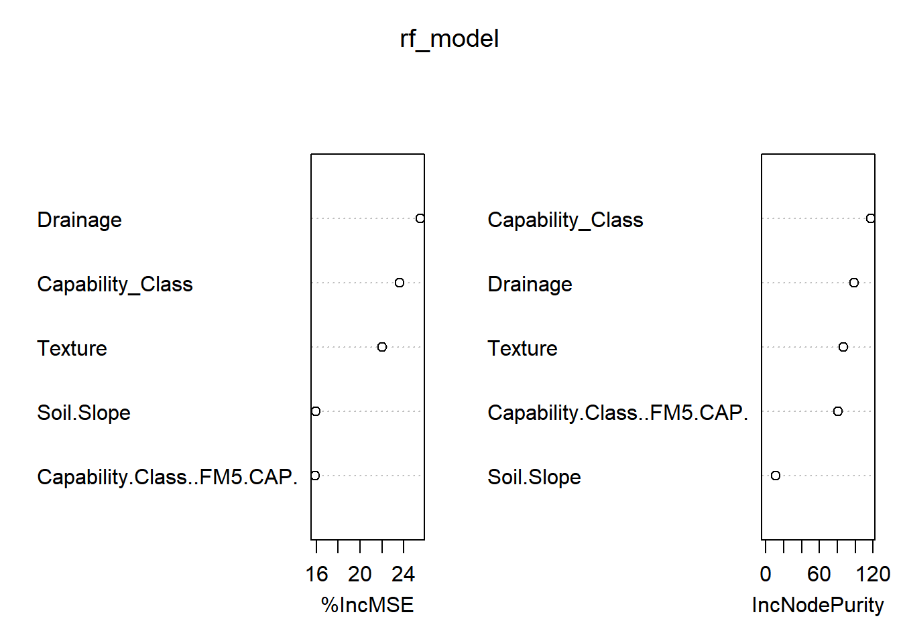
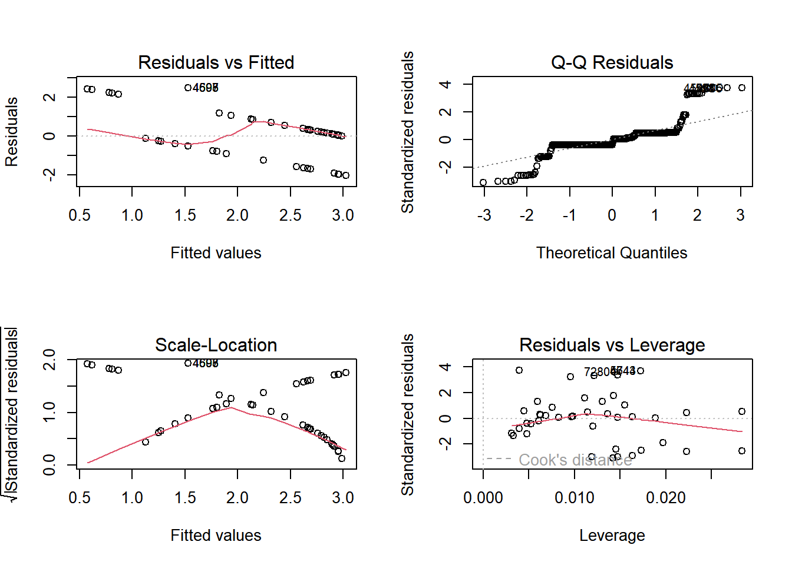

The following objects are masked from 'package:stats':
filter, lag
The following objects are masked from 'package:base':
intersect, setdiff, setequal, union
# Read the datasetdata <-read.csv("C:\\Users\\Dell\\Downloads\\NYSERDA_2023_Soils_Data_for_use_in_the_Large-Scale_Renewables_and_NY-Sun_Programs.csv")# Convert factors to numeric if necessary (assuming 'Flooding' is binary or categorical)data$Drainage <-as.numeric(as.factor(data$Drainage))data$Flooding <-as.numeric(as.factor(data$Flooding))# Handling NA valuesdata <-na.omit(data)# Using cor.test to determine the correlationcor_test <-cor.test(data$Drainage, data$Flooding)print(cor_test)
Pearson's product-moment correlation
data: data$Drainage and data$Flooding
t = 16.142, df = 407, p-value < 2.2e-16
alternative hypothesis: true correlation is not equal to 0
95 percent confidence interval:
0.5618257 0.6804973
sample estimates:
cor
0.6247561
The Pearson correlation coefficient between the ‘Drainage’ and ‘Flooding’ columns in your dataset is approximately 0.625, indicating a moderate positive correlation. This suggests that as drainage characteristics of the soil increase (presumably indicating better drainage capacity), the occurrence of flooding also increases. This result might seem counterintuitive at first glance; however, it could indicate that areas classified with better drainage are also those where water accumulates quickly, thus making them prone to flooding under certain conditions.
Interpretation and Next Steps: Statistical Significance: The p-value is less than 0.05 (actually, it’s much smaller than that), indicating that the correlation is statistically significant, and the likelihood that this correlation is due to random chance is very low. Practical Significance: While statistically significant, the strength of the correlation (moderate) suggests that while there is a relationship, other factors also significantly influence the presence of flooding. It’s important to consider these factors in any risk assessment or land use planning. Further Analysis: Investigating how other variables interact with ‘Drainage’ and ‘Flooding’ could provide deeper insights. For instance, soil texture, slope, and capability class could be influencing how quickly water is absorbed or runs off, affecting flooding.
# Load necessary librarieslibrary(randomForest)
Warning: package 'randomForest' was built under R version 4.3.3
randomForest 4.7-1.1
Type rfNews() to see new features/changes/bug fixes.
Attaching package: 'randomForest'
The following object is masked from 'package:dplyr':
combine
# Handling NA values - assuming you're interested in predicting 'Flooding'data_clean <-na.omit(data[, c("Flooding", "Drainage", "Texture", "Soil.Slope", "Capability.Class..FM5.CAP.")])data_clean$Texture <-as.numeric(as.factor(data_clean$Texture))# Convert all categorical variables to factor typedata_clean$Capability_Class <-as.factor(data_clean$"Capability.Class..FM5.CAP.")# Fit Random Forest modelset.seed(123) # for reproducibilityrf_model <-randomForest(Flooding ~ ., data=data_clean, ntree=500, importance=TRUE)
Warning in randomForest.default(m, y, ...): The response has five or fewer
unique values. Are you sure you want to do regression?
# Print model summaryprint(rf_model)
Call:
randomForest(formula = Flooding ~ ., data = data_clean, ntree = 500, importance = TRUE)
Type of random forest: regression
Number of trees: 500
No. of variables tried at each split: 1
Mean of squared residuals: 0.08768223
% Var explained: 91.48
# Plot importance of variablesvarImpPlot(rf_model)

These plots are key to understanding which predictors are most influential in modeling the outcome (in your case, flooding).
Interpretation of the Variable Importance Plots: %IncMSE: This plot shows the increase in Mean Squared Error (MSE) of the model when each variable is randomly shuffled. A higher value indicates that the model relies more on that variable for prediction, meaning the variable is more important. According to your graph, ‘Drainage’ seems to be the most important predictor, followed by ‘Capability_Class’ and ‘Texture’. IncNodePurity: This measure is based on the total decrease in node impurities from splitting on the variable, averaged over all trees. Node impurity is typically measured by the RSS (regression) or Gini impurity (classification). In this graph, ‘Capability_Class’ contributes most to node purity, followed by ‘Drainage’ and ‘Texture’. This suggests that ‘Capability_Class’ is particularly effective at creating homogeneous nodes, likely due to its role in determining soil usability.
#Investigating interaction effects between predictors like ‘Drainage’ and ‘Texture’ in the context of their impact on flooding can provide deeper insights into how these variables jointly influence the outcome. In R, you can include interaction terms directly in your model formula to study these effects. Here, we’ll look at two approaches: using multiple regression to evaluate the statistical significance of the interaction, and using a Random Forest model to assess the predictive power when interactions are considered.
R Code for Multiple Regression with Interaction Terms We’ll modify the linear regression model to include an interaction term between ‘Drainage’ and ‘Texture’. This will allow us to see if the effect of one variable on flooding depends on the level of the other variable.
# Load necessary librarylibrary(stats)data$Texture <-as.numeric(as.factor(data$Texture)) # Convert categorical to numericdata$Drainage <-as.numeric(as.factor(data$Drainage)) # Convert categorical to numeric if needed# Fit Multiple Regression Model with Interaction Termmodel_interaction <-lm(Flooding ~ Drainage * Texture, data = data)# Summary of the model to see coefficients and significancesummary(model_interaction)
Call:
lm(formula = Flooding ~ Drainage * Texture, data = data)
Residuals:
Min 1Q Median 3Q Max
-2.0282 -0.2530 -0.1270 0.3186 2.4724
Coefficients:
Estimate Std. Error t value Pr(>|t|)
(Intercept) -0.349160 0.133186 -2.622 0.00908 **
Drainage 0.229149 0.015232 15.044 < 2e-16 ***
Texture 0.294757 0.020929 14.084 < 2e-16 ***
Drainage:Texture -0.020150 0.002235 -9.018 < 2e-16 ***
---
Signif. codes: 0 '***' 0.001 '**' 0.01 '*' 0.05 '.' 0.1 ' ' 1
Residual standard error: 0.6614 on 405 degrees of freedom
Multiple R-squared: 0.5791, Adjusted R-squared: 0.576
F-statistic: 185.8 on 3 and 405 DF, p-value: < 2.2e-16
Interpretation of the Regression Output Coefficients: Intercept (-0.349160): This represents the baseline value of flooding when both ‘Drainage’ and ‘Texture’ are at their reference levels (typically zero in numerical coding). Drainage (0.229149): This coefficient indicates that for each unit increase in drainage (without considering the impact of texture), flooding increases by approximately 0.229 units, holding other factors constant. Texture (0.294757): Similarly, for each unit increase in texture, flooding increases by approximately 0.295 units, holding other factors constant. Drainage:Texture Interaction (-0.020150): The negative interaction term suggests that the combined effect of ‘Drainage’ and ‘Texture’ on flooding is less than the sum of their individual effects. In other words, higher levels of one may slightly mitigate the influence of the other on flooding. Statistical Significance: All predictors, including the interaction term, are highly statistically significant (p < 0.001), indicating strong evidence against the null hypothesis of no effect. Model Fit: Residual Standard Error (RSE) (0.6614): This measures the typical size of the residuals, and in your context, it implies that the standard deviation of the residuals is around 0.661 units. Multiple R-squared (0.5791): Approximately 57.91% of the variability in flooding is explained by the model, which is a decent level of explanatory power for natural science data. Adjusted R-squared (0.576): Slightly adjusted for the number of predictors, still indicating a good fit. Residuals: The spread of residuals suggests that while the model fits well for many observations (median close to zero), there are outliers and some predictions that deviate significantly from the actual values, as indicated by the min and max residuals.
#R Code for Random Forest with Feature Engineering Random Forest inherently considers interactions among features, but we can explicitly engineer an interaction feature to see how it influences model performance.
# Load necessary librarieslibrary(randomForest)library(dplyr)# Prepare the datadata <-mutate(data, Drainage_Texture_Interaction = Drainage * Texture)# Fit Random Forest Model including the engineered interaction featureset.seed(123) # for reproducibilityrf_model_interaction <-randomForest(Flooding ~ Drainage + Texture + Drainage_Texture_Interaction, data = data, ntree =500)
Warning in randomForest.default(m, y, ...): The response has five or fewer
unique values. Are you sure you want to do regression?
# Evaluate the model (assuming Flooding is continuous; adjust as necessary)print(rf_model_interaction)
Call:
randomForest(formula = Flooding ~ Drainage + Texture + Drainage_Texture_Interaction, data = data, ntree = 500)
Type of random forest: regression
Number of trees: 500
No. of variables tried at each split: 1
Mean of squared residuals: 0.1969851
% Var explained: 80.86
# Optionally, view the importance of the new interaction featureimportance(rf_model_interaction)
Interpretation of the Random Forest Model Results: Model Performance: Mean of squared residuals (0.1969851): This value is considerably lower than the residual standard error from the linear regression model (0.6614), suggesting that the Random Forest model has better predictive accuracy. % Var explained (80.86%): A high percentage of variance explained indicates that the Random Forest model is effectively capturing the relationships and variability in the data. It explains more than 80% of the variance in flooding, which is significantly higher than the Multiple R-squared from the linear regression model (57.91%). Feature Importance: Drainage: Importance score of 115.0117, suggesting it’s a significant predictor of flooding. Texture: Importance score of 121.6274, slightly more influential than ‘Drainage’. Drainage_Texture_Interaction: With the highest importance score of 131.4226, this engineered feature seems to be the most significant predictor in the model. This underscores the value of including interaction terms explicitly, even in a model like Random Forest that inherently accounts for interactions among features. Comparison and Conclusion: Explanatory Power: The linear regression model provides clear coefficients that describe the relationship between each predictor and the outcome, including how the interaction term modifies these relationships. This is particularly useful for hypothesis testing and understanding the specific effects of changes in predictors. Predictive Accuracy: The Random Forest model outperforms the linear regression in terms of predictive accuracy, explaining a higher percentage of the variance in flooding and producing a lower mean squared residual. Feature Importance: Random Forest offers an advantage in evaluating the importance of features, including interactions, without needing a specific hypothesis about their effects.
Cross-Validation and Residual Analysis
Cross-Validation for Linear Regression and Random Forest
# Load necessary librarieslibrary(caret)
Warning: package 'caret' was built under R version 4.3.3
Loading required package: ggplot2
Attaching package: 'ggplot2'
The following object is masked from 'package:randomForest':
margin
Loading required package: lattice
library(randomForest)data$Texture <-as.numeric(as.factor(data$Texture))data$Drainage <-as.numeric(as.factor(data$Drainage))# Define training controltrain_control <-trainControl(method ="cv", number =10) # 10-fold cross-validation# Fit Linear Regression Model using cross-validationlm_model_cv <-train(Flooding ~ Drainage + Texture + Drainage:Texture, data = data, method ="lm", trControl = train_control)# Fit Random Forest Model using cross-validationrf_model_cv <-train(Flooding ~ Drainage + Texture + Drainage:Texture, data = data, method ="rf", trControl = train_control, ntree =500)
note: only 2 unique complexity parameters in default grid. Truncating the grid to 2 .
Warning in randomForest.default(x, y, mtry = param$mtry, ...): The response has
five or fewer unique values. Are you sure you want to do regression?
Warning in randomForest.default(x, y, mtry = param$mtry, ...): The response has
five or fewer unique values. Are you sure you want to do regression?
Warning in randomForest.default(x, y, mtry = param$mtry, ...): The response has
five or fewer unique values. Are you sure you want to do regression?
Warning in randomForest.default(x, y, mtry = param$mtry, ...): The response has
five or fewer unique values. Are you sure you want to do regression?
Warning in randomForest.default(x, y, mtry = param$mtry, ...): The response has
five or fewer unique values. Are you sure you want to do regression?
Warning in randomForest.default(x, y, mtry = param$mtry, ...): The response has
five or fewer unique values. Are you sure you want to do regression?
Warning in randomForest.default(x, y, mtry = param$mtry, ...): The response has
five or fewer unique values. Are you sure you want to do regression?
Warning in randomForest.default(x, y, mtry = param$mtry, ...): The response has
five or fewer unique values. Are you sure you want to do regression?
Warning in randomForest.default(x, y, mtry = param$mtry, ...): The response has
five or fewer unique values. Are you sure you want to do regression?
Warning in randomForest.default(x, y, mtry = param$mtry, ...): The response has
five or fewer unique values. Are you sure you want to do regression?
Warning in randomForest.default(x, y, mtry = param$mtry, ...): The response has
five or fewer unique values. Are you sure you want to do regression?
Warning in randomForest.default(x, y, mtry = param$mtry, ...): The response has
five or fewer unique values. Are you sure you want to do regression?
Warning in randomForest.default(x, y, mtry = param$mtry, ...): The response has
five or fewer unique values. Are you sure you want to do regression?
Warning in randomForest.default(x, y, mtry = param$mtry, ...): The response has
five or fewer unique values. Are you sure you want to do regression?
Warning in randomForest.default(x, y, mtry = param$mtry, ...): The response has
five or fewer unique values. Are you sure you want to do regression?
Warning in randomForest.default(x, y, mtry = param$mtry, ...): The response has
five or fewer unique values. Are you sure you want to do regression?
Warning in randomForest.default(x, y, mtry = param$mtry, ...): The response has
five or fewer unique values. Are you sure you want to do regression?
Warning in randomForest.default(x, y, mtry = param$mtry, ...): The response has
five or fewer unique values. Are you sure you want to do regression?
Warning in randomForest.default(x, y, mtry = param$mtry, ...): The response has
five or fewer unique values. Are you sure you want to do regression?
Warning in randomForest.default(x, y, mtry = param$mtry, ...): The response has
five or fewer unique values. Are you sure you want to do regression?
Warning in randomForest.default(x, y, mtry = param$mtry, ...): The response has
five or fewer unique values. Are you sure you want to do regression?
# Summary of cross-validation resultsprint(lm_model_cv)
Linear Regression
409 samples
2 predictor
No pre-processing
Resampling: Cross-Validated (10 fold)
Summary of sample sizes: 367, 368, 368, 368, 369, 367, ...
Resampling results:
RMSE Rsquared MAE
0.6608545 0.5871187 0.4143339
Tuning parameter 'intercept' was held constant at a value of TRUE
print(rf_model_cv)
Random Forest
409 samples
2 predictor
No pre-processing
Resampling: Cross-Validated (10 fold)
Summary of sample sizes: 368, 369, 368, 369, 368, 367, ...
Resampling results across tuning parameters:
mtry RMSE Rsquared MAE
2 0.4282331 0.8134469 0.1653817
3 0.4379896 0.8039825 0.1682584
RMSE was used to select the optimal model using the smallest value.
The final value used for the model was mtry = 2.
The cross-validation results for both the Linear Regression and Random Forest models provide a clear comparison of their performance:
Linear Regression Model: RMSE (Root Mean Squared Error): 0.6608545 R-squared: 0.5871187 MAE (Mean Absolute Error): 0.4143339 These metrics indicate that the linear regression model explains about 58.71% of the variance in the data. The RMSE and MAE values provide a measure of the average error in the predictions.
Random Forest Model: RMSE: 0.4282331 R-squared: 0.8134469 MAE: 0.1653817 Optimal mtry: 2 The Random Forest model significantly outperforms the Linear Regression in all the metrics. It explains approximately 81.34% of the variance in the data, and both its RMSE and MAE are lower, indicating more accurate predictions.
Diagnostic Plots for Linear Regression
# Fit the linear modellm_model <-lm(Flooding ~ Drainage + Texture + Drainage:Texture, data = data)# Diagnostic plotspar(mfrow =c(2, 2))plot(lm_model)

The diagnostic plots for your linear regression model provide valuable insights into how well the model meets the assumptions necessary for optimal performance. Here’s an interpretation of each plot:
Residuals vs Fitted This plot helps check for non-linearity and heteroscedasticity (unequal variance of residuals).
Observations: The residuals do not appear to display any clear pattern, which is good for linearity. However, there is a slight “fanning” effect where the spread of residuals increases with fitted values, suggesting potential heteroscedasticity. Action: Consider transformations of the dependent variable or use heteroscedasticity-consistent standard errors if this model will be used for inferential purposes. 2. Normal Q-Q This plot shows if the residuals are normally distributed—a key assumption of linear regression.
Observations: Most points lie on the line, but there are deviations at the tails (both lower and upper ends), indicating slight departures from normality. Action: This is generally not severe unless very precise estimates are required. For more robustness, consider using non-parametric bootstrapping techniques to estimate standard errors. 3. Scale-Location (or Spread-Location) This plot checks if residuals are spread equally along the ranges of predictors (homoscedasticity).
Observations: The red line (a loess fit) shows a trend, which suggests that residuals have non-constant variance across the range of fitted values. Action: This supports the earlier suggestion of possible heteroscedasticity. Transformations or robust regression methods might be needed. 4. Residuals vs Leverage This plot helps to identify influential cases that might have an unduly large effect on the model estimate.
Observations: Most data points have low leverage, but there are a few points well outside the Cook’s distance lines (notably the points labeled 7280 and 4430). Action: Investigate these points further to determine if they are outliers or influential points due to data entry errors or other reasons. Consider removing or adjusting these points if they are deemed to be errors. Conclusion The diagnostic plots indicate that while the model does not suffer from severe issues, there are indications of potential heteroscedasticity and some influence from outliers or high-leverage points.